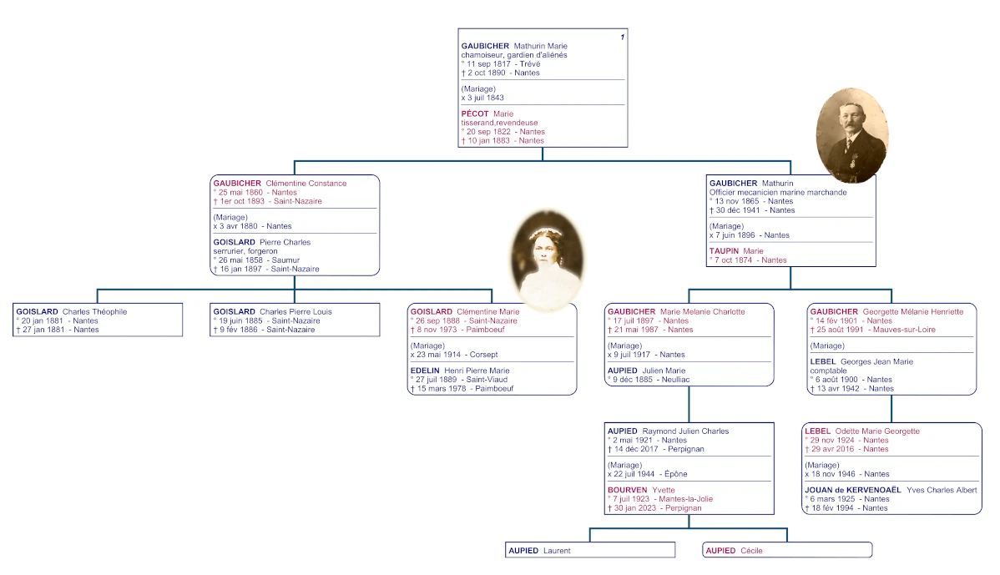
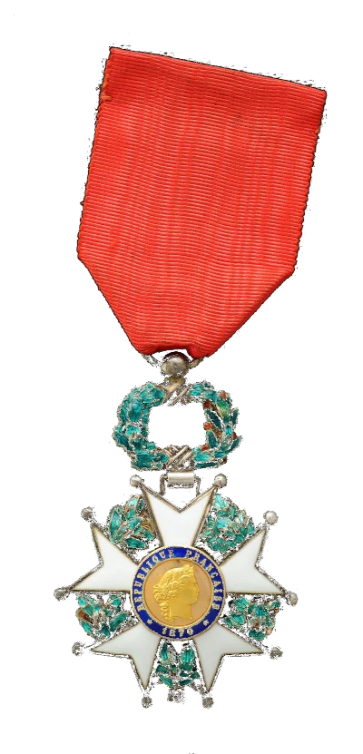

Détail sur la filiation entre Clémentine Goislard et son oncle maternel Mathurin Gaubicher



(nov. 1913, Mathurin à Clémentine)
(1913, Mathurin à Clémentine)

(sept. 1913, Mathurin à Clémentine)

Mathurin Gaubicher
Mathurin est l'oncle maternel de Clémentine. Il est né le 13 novembre 1865 à Nantes. Il est le frère de la mère de Clémentine et le seul membre de sa famille encore vivant lorsqu’elle devient orpheline. Il épouse Marie Taupin à Nantes le 7 juin 1896. De cette union naîtront deux filles : Marie (1897) et Georgette (1901). Il était également le parrain d'Henri Edelin, fils.
Mathurin était officier mécanicien dans la marine marchande et a également servi sur un vapeur militaire durant la Première Guerre mondiale. Il habitait au 31, rue de Vertais à Nantes.
Le 5 août 1927, il a été nommé chevalier de la Légion d'honneur au titre d’officier de la marine marchande. À cette époque, il était président du Syndicat des officiers mécaniciens à Nantes.

Sur ses états de service durant la guerre, on peut lire :
Pendant la guerre 1914-1918, M. GAUBICHER a été embarqué comme Chef mécanicien à bord du vapeur "HOMECOURT" qui a combattu trois attaques de sous-marins allemands, M. GAUBICHER a touché de ce fait une prime du "JOURNAL" pour les Héros de la mer. Officier très distingué qui a toujours fait preuve du plus bel esprit de devoir et de dévouement.